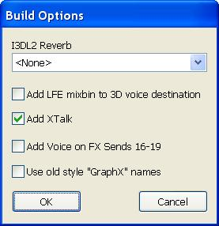
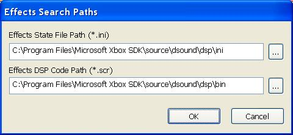
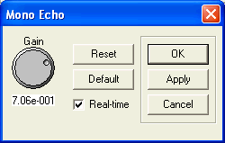
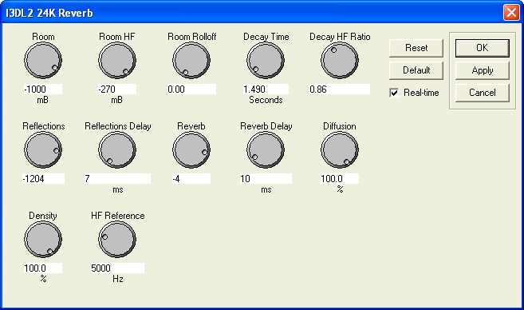
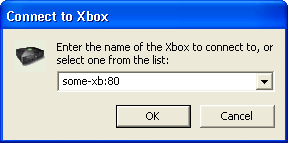

This article contains information about the commands currently supported by the DSP Builder tool.
The main menu appears at the top of the DSPBuilder window. Currently, the main menu contains the following options:
The File menu contains the following commands:
The Edit menu contains the following commands:
The View menu contains the following commands:
The Insert menu contains the following commands:
The Audition menu contains the following commands:
Note You must connect to your Xbox before you can transmit an image or audition effect parameters.
The Tools menu contains the following commands:
Note This is used only to audition effect settings, such as when using Audio Console. The settings you choose are not saved into the generated effects image. Rather, the parameter settings are saved in the header file for the DSP image in the following format (where the actual values are based on parameters set in the dialog box):
#define DSI3DL2_ENVIRONMENT_GraphI3DL2_I3DL2Reverb -1000, -100, 0.000000, 1.490000, 0.830000, -2602, 0.007000, 200, 0.011000, 100.000000, 100.000000, 5000.000000
The define value for I3DL2 listener settings which is appended to the generated header file is of the format:
#define DSI3DL2_ENVIRONMENT_<graph>_<effect> <parameters>
To use the reverb values in the dialog box your game title will still need to call SetI3DL2Listener, but can use the DSI3DL2_ENVIRONMENT defines.
The Help menu contains the following items:
The following list contains all the possible commands that are available in the DSPBuilder context menu. To access the context menu, right-click the mouse when the pointer is in the application. The commands available in the pop-up menu depend where the pointer is in the application's window when the mouse is right-clicked.
Note If you have not selected a default reverb as a build option from the Build Options command on the Tools menu, an I3DL2 reverb added manually with the Insert Effect command becomes the default reverb. If you later add a default reverb from the Build Options command, the manually added reverb ceases to be the default reverb.
Note If you set more than one effect to overwrite the same set of mixbins, you will create a circular dependency, and DSPBuilder will warn you about this condition when you attempt to build the image. A circular dependency is not a fatal condition, but DSPBuilder cannot determine the correct order of effects in the image. As a result, the results may be unpredictable.
The following list contains the commands available in a given context:
This section covers the dialog boxes that the DSPBuilder uses.
The Build Options dialog box allows you to add an I3DL2 reverberation effect, add the LFE speaker mixbin to the 3D voice destinations, and add the crosstalk cancellation effect. The drop-down list box for the I3DL2 reverberation effect lets you choose the default environmental settings that the effect will use.
An optional check box adds four sample rate converters effects connected to FX sends 16 through 19 for voice support.
Note Selections made in the Build Options dialog box will be applied to the DSP image when it is generated, but will not be reflected in the DSPBuilder workspace.
The following image shows the Build Options dialog box:

The Directories dialog box allows you to specify the directories where your DSP effect images (.scr files) and DSP effect state files (.ini files) are stored.
The following image shows the Directories dialog box:

The effect properties dialog box allows developers to adjust the initial settings of the exposed properties of an effect. Only effects that have adjustable properties, like the mono echo effect, will have a properties dialog box available.
Note There is an effects preview dialog box available for the I3DL2 effects, but the I3DL2 reverberation effect settings are not saved and should be controlled using the IDirectSound8::SetI3DL2Listener, IDirectSoundBuffer8::SetI3DL2Source, and IDirectSoundStream::SetI3DL2Source methods.
The following image shows the effect properties dialog box for the mono echo effect:

The I3DL2 24K Reverb dialog box allows you to adjust the current environmental reverb properties. It is only available if you have a reverb turned on in the build options, or if you have inserted a 24K reverb effect on the diagram.
Note This dialog box is only used to audition effect settings, such as when using Audio Console. The settings you choose are not saved into the generated effects image.
The following image shows the I3DL2 24K Reverb dialog box:

The transmit options dialog box allows you to set the name or IP address of their Xbox Development Kit and specify what port to use to transmit an effects image to the kit. The port number is an optional parameter and does not need to be specified.
The following image shows the transmit options dialog box:

There are two methods for drawing patch cords: automatic and manual.
The automatic method: Left click (and hold) and drag. Start by left-clicking on either a patch cord or on the input or output of an effect or mixbin. Then (by holding down the left mouse button) drag to another patch cord or to another input or output of an effect or mixbin, and then release. When you click or move the mouse, the line will snap to the nearest input/output or patch cord (if you are close enough to the nearest input/output or patch cord).
The manual method: Left click, release and move. Start by left clicking on either a patch cord or the input or output of an effect or mixbin. Then release the mouse button. Move the mouse where you want the line drawn. If you left click in the open, the line will be anchored at that point and you can continue drawing the line. Once you left click on another patch cord or an input or output of an effect or mixbin, the line will be finished. If you change your mind and don't want the line drawn, double click in the open and the drawing will be canceled.
Left or right clicking on any object (patch cord, effect, or mixbin) will select (and highlight) the object. You can select multiple items by holding down SHIFT or CONTROL. This action can be used to toggle the selection state of an object. You can also cancel a multiple selection by left-clicking (not pressing SHIFT or CONTROL) on an unselected item or in the open. You can also draw a box around multiple items to select them. You can accomplish this by by left-clicking in the open and dragging with the mouse. To toggle the state of the selected items, press either SHIFT or CONTROL when drawing the selection box.
To enlarge the workspace in the DSPBuilder window, click on the left or down arrows in the scroll bar.
The status bar in the bottom right part of the DSPBuilder window displays additional information about the DSP effect image that you are currently creating. The information includes memory use, scratch memory length, and estimated number of DSP cycles used by the DSP effect image.